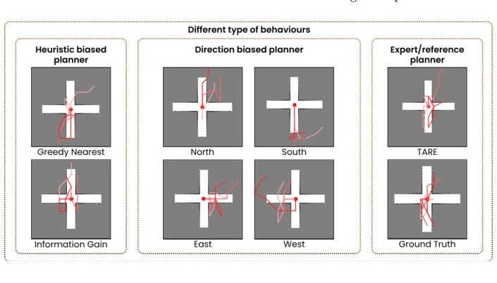
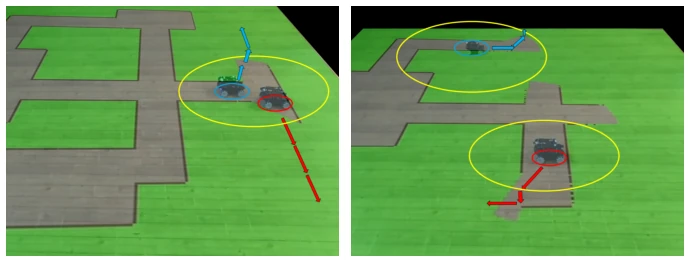

Fig. 2. PCDP training and execution pipeline. Planner-diverse demonstrations train a diffusion policy conditioned on graph observation and planner identity; at inference, locally coordinating agents jointly rerank sampled trajectories.

Fig. 3. Trajectory diversity under planner conditioning. From similar graph observa- tions, different planner conditions produce distinct trajectory modes, illustrating that the learned policy captures a multimodal exploration distribution.
Fig. 1. PCDP execution with two agents. Each agent independently samples a diverse set of candidate trajectories from the diffusion policy, conditioned on its own graph observation and multiple planner identities to maximize behavioral diversity. Agents within coordination range perform local reranking over their joint candidate sets, se- lecting the combination that minimizes predicted overlap and redundant coverage. The selected trajectory is then executed in a receding-horizon manner before replanning.

Fig. 4. Real-robot two-agent exploration under the proposed framework.